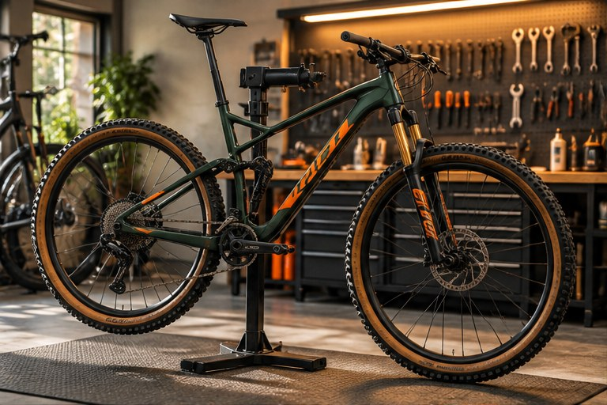
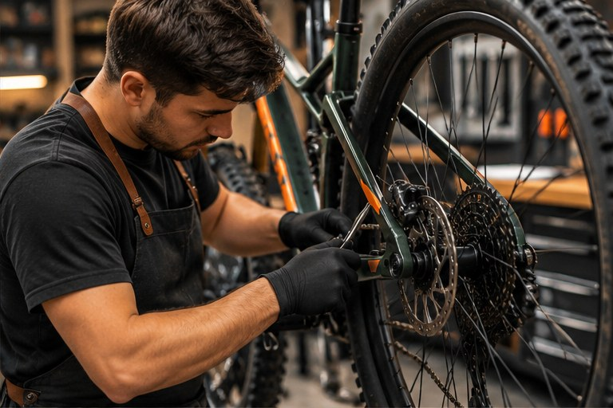

01 / AJUSTES
Frenos y cambios
Revisamos el frenado y ajustamos las velocidades para un recorrido más cómodo.
Solicitar servicioTALLER DE BICICLETAS
Desde un ajuste de frenos hasta un mantenimiento completo. Te ayudamos a que tu bicicleta esté lista para el siguiente recorrido.

Revisiones prácticas
Solicitudes por WhatsApp
Para distintos tipos de bici
LO QUE HACEMOS
01 / AJUSTES
Revisamos el frenado y ajustamos las velocidades para un recorrido más cómodo.
Solicitar servicio02 / CUIDADO
Quitamos suciedad y damos mantenimiento básico a la transmisión de tu bicicleta.
Solicitar servicio03 / REVISIÓN
Una revisión de las piezas principales para detectar ajustes pendientes.
Solicitar servicio
UN TALLER PARA TU DÍA A DÍA
A veces un pequeño ruido o un freno flojo puede arruinar el paseo. Por eso en BiciPoint queremos que revisar tu bici sea algo fácil y sin complicaciones.
¿TU BICI NECESITA AYUDA?
Elige un servicio y prepara tu solicitud de cita.